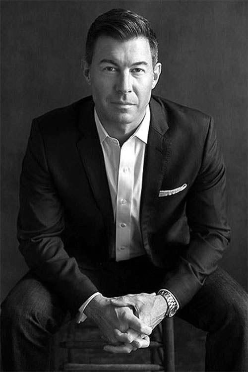

罗尼索尔斯
建筑师艺术名家
建筑所体现的不是日常的平凡琐事，而是永恒的、根本的、普遍的问题和人类存在的“价值”，它所涉及的不是事物实际的状态，而是事物可能的或者应该所具有的状态，呈现的是理想价值的结构化。真正的建筑给人类提供一种精神燃料，精神因为可能被耗尽而衰竭。
设计的尊严在于驱动自由的勇气，真正紧要的是，为了某种方向触动了人性中的自由禀性，这种热情和情感让人有着某种冲动去开拓未来的潜在动力，也证明了人类创造自身自由进步之能力；设计激发了回响，而非达成某种结果，开辟了新的思想探讨的领域，因为它的陌生感，他为后来的探索者打开了思考的自由度。
我是一个嗅觉很灵敏的人，我会在下一个猎物出现的一瞬间，就嗅到它的味道，然后牢牢地抓住它不撒手，不管它挣扎得有多厉害。我做事很有主心骨，只要是自己想好要做的事情，一般不受别人的干扰，就是我爸我妈阻止我，我也不会理。我基本上是一个跟着直觉走的人，幸好，还没有失手过。
上一页
1
下一页